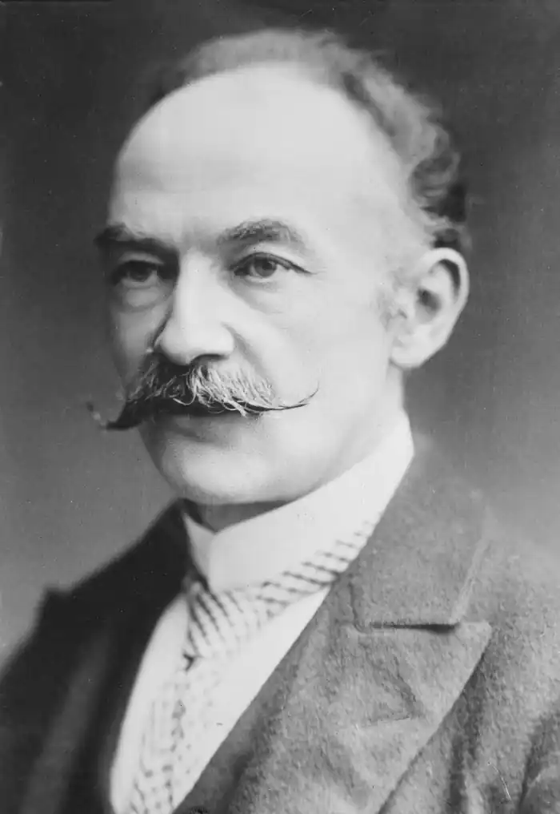

ГАРДІ, Томас (Hardi (Hardy), Thomas — 02.06.1840, Верхній Бокгемптон, Стінсфордська парафія графства Дорсетшир — 11.01.1928, Макс-Гейт, поблизу Дорчестера) — англійський письменник.
Народився у сім'ї дрібного підрядчика, дід Гарді був вільним землеробом. Дитячі роки проминули у патріархальній атмосфері сільської Англії, де ще були живими давні традиції (простота стосунків поміж фермерами, землевласниками та робітниками), народні звичаї, свята, ярмарки, пісні.
У 1856 р. Гарді став учнем місцевого архітектора в Дорчестері. Протягом наступних шести років він інтенсивно займався самоосвітою: класична література, історія, філософія, німецька, французька, грецька, латинська мови. Поглиблене та різностороннє читання Гарді продовжував усе життя. У 1862 р. він вирушив у Лондон, де впродовж п'яти років працював і вивчав готичну архітектуру у відомого архітектора А. Блумфільда, відвідуючи водночас вечірні курси при Кінгс Коледжі. Рукопис першого роману "Бідняк і леді" ("The Poor Man and the Lady", 1867), відхилений відомими видавцями О. Макмілланом і Чеп-меном, Гарді особисто знищив. Радикалізм роману, який був "драматичною сатирою" на всі верстви англійського суспільства, його релігію та мораль, збентежив і Дж. Мередіта, котрий порадив автору-початківцю написати новий роман "зі суто художньою метою". Своєрідним експериментом став роман "Відчайдушні засоби" ("Desperate Remedies", 1871), виданий анонімно. Притаманні йому гострий сюжет, прийоми сенсаційного та детективного жанрів свідчили про безумовний вплив на молодого автора В. Коллінза, знаменитого майстра сенсаційної літератури. З-під пера Гарді, який протиставляв "ремеслу" романістики "мистецтво" поезії, заявляючи, що лише життєві обставини спонукали його звернутися до прози, вийшло 14 романів (з 1871 по 1897), об'єднаних автором у три цикли: "Романи винахідливі та експериментальні"("Novels of Ingenuity and Exsperiment") — "Відчайдушні засоби", "Рука Етельберти" ("The Hand of Ethelbertha", 1876), "Байдужа" ("ALaodicean", 1881); "Романтичні історії та фантазії" ("A Pair of Blue Eyes", 1873), "Двоє на вежі" ("Two on a Tower", 1882), "Кохана" ("The Well —beloved", 1897); "Романи характерів і середовища" ("The Novels of Charakter and Environment") — "Під зеленим деревом" ("Under the Greenwood Tree", 1872), "Далеко від шаленої юрби" ("Far from the Madding Growd", 1874), "Повернення на батьківщину" ("The Return of the Native", 1878), "Мер Кестербріджа" ("The Mayor of Casterbridge", 1886), "Тесе із роду Д'Ербервіллів" ("Tess of the d'Urbervilles", 1891), "Джуд Непомітний" ("Jude the Obscure", 1895). Назва циклу — "Романи характеру та середовища" — натякає на конфлікт, що лежить в основі романного циклу, а саме — на трагічне зіткнення людини (характеру) з обставинами, оточенням, коренями, порядком світобудови. Відгукуючись на сучасні йому філософські та природничо-наукові теорії (А. Шопенгауер, Ч. Дарвін, позитивізм), Гарді осягав "велику драму" буття: у людині природний процес вступає у суперечність із самим собою на ґрунті свідомості. Свідомість людини — трагічна "провина", які відчужує її від природи і виводить за межі космологічної схеми, що прирікає на "нездійсненність" замислів, страждання і біль. Гарді був упевнений: людина не повинна "моделювати" свою поведінку на "очевидних" природних законах (інакше це призведе людство до саморуйнування). Таким чином, захищаючи свою духовну самоцінність, людина приречена на "трагедію" — єдино гідну її форму існування. Трагедію "гідності, оточеної Неминучістю" Гарді втілив у просторі "наполовину вигаданого" краю Вессекс. Вессекс, у стародавні часи одне із семи саксонських королівств, у Гарді — модель усього універсуму, космос в мініатюрі. Закони світобудови безпосередньо виявлені тут у передбачуваному, ритуалізованому бутті селянської спільноти. Ритуали, які "постачають" переживаннями цілісності світу та знаннями про нього які дають патріархальній людині відчуття укоріненості в універсумі, є заданими, вершинними подіями "архетипних" сюжетів у романа "характерів і середовища" (ритуали, які відповідають річному циклу, — запалення Листопадових багать, Святкової вистави, Травневого дерева, Літнього танцю у "Поверненні на батьківщину"). Зменшення в останніх романах Гарді ролі "хору" простих смертних, селян, життя котрих незмінно проходить у повсякденних справах та клопотах, свідчить про втрату письменником віри у саме існування порядку в світі. У "Джуді Непомітному" трагічне "так мусить бути" змінюється іронічним "у будь-якому випадку, і так", яке заперечує будь-яку міфологічну надбудову. У романах Гарді космізоване буття Вессекса т передбачає самосвідомості людини, самоцінності її духовної культури. Блудний син природи, трагічна людина Гарді шукає Бога у собі самій, творить Бога за своїм образом і подобою. Розділ у якому ми вперше знайомимося з Клаймсу Ібрайтом у "Поверненні на батьківщину", називається "Для мене царство — розум мій". Герой останнього роману циклу ("Джуд Непомітний") випереджує сучасний раціоналізм з його уявною самодостатністю. Соліпсична від'єднаність свідомості Тесе ("Тесе із роду Д'Ербервіллів") котра осягає світ як "психологічний феномен прирікає її на трагічну самотність. Зіткнення трагічної людини, котра намагається утвердити свою самоцінність, зі світопорядком, прагнення її до нового, достойного світу зазвичай вибувається у формі порушення актом її незалежної волі ритуального ритму, звичаю, закону, що упорядковує життя селянської спільноти. Погляд на життя як на спектакль дає героєві Гарді можливість активної поведінки, звільняє його з-під влади автоматичної, позасвідомої, колективної поведінки у патріархальному світі Вессексу. Трагічні герої Гарді за масштабом своєї особистості цілком на рівні ситуації, вони "гідні" того порядку, який порушують. Романіст підтримує "божественний" статус своїх героїв "архетипною граматикою", надаючи їм рис помираючих богів, висвічує у них прометеївський первень. У Гарді помилки, що коріняться у найкращих рисах людського характеру, — неодмінна умова життя. Втрата ілюзій, усвідомлення героєм страшної істини про "межі клітки", у якій він ув'язнений, поєднані зі смертю. Смерть як обов'язок, який неодмінно потрібно повернути трагічною людиною природі, передбачає певну життєву модель — долю. Під долею Гарді розуміє не беззмістовний фатум, а "вказівку" на межі індивідуальності. Оскільки в романах "характерів і середовища" зіткнення людини з порядком природи постає як її вихід з ритуалізованого світу вессекської спільноти, як у тій чи іншій формі загроза всьому світу, відновлення природного порядку втілюється в укладенні соціальної угоди поміж "вцілілими", звичайними людьми, як правило, в укладенні чи відновленні шлюбних відносин. У "вессекських" романах, як у міфах, смерть — початок життя. Стиль Гарді-прозаїка вирізняють оголена сюжетність творів (пафос подійності — творчої, дієвої), "інтенсифіковане" — пластичне, образотворче — вираження внутрішнього змісту явищ, символізація.У 1888 р. Гарді зібрав опубліковані раніше в газетах і журналах твори малої епічної форми у цикл "Вессекські оповідання" ("Wessex Tales"). Згодом вийшли друком ще три збірки: "Група шляхетних дам" ("A Group of Noble Dames", 1891), "Маленькі іронії життя" ("Life's Little Ironies", 1894), "Змінена людина" ("A Changen Man", 1913), усього близько сорока повістей та оповідань. У 1903—1908 pp. Гарді створив епічну драму "Династи" ("The Dynasts. An Epic Drama of the War with Napoleon"), в якій звернувся до епохи наполеонівських війн, втілив універсальну трагедію буття, трагедію нікчемності та марності вчинків людини у світі, керованому незбагненною іманентною Волею. У трактуванні Волі як творчого принципу універсуму відчутний вплив філософії А. Шопенґауера, котрий трактував історію як динамічне театральне видовище при внутрішньо незмінному смислі буття. Використання алегоричних образів Тіні землі, Духа років, Співчуття та ін. поєднується в "Династах" зі змалюванням конкретно історичних осіб і подій. Останні три десятиліття життя Гарді присвятив поетичній творчості. Його віршова спадщина охоплює близько тисячі творів різноманітних жанрів, які склали вісім поетичних збірок: "Вессекські вірші" ("VJessex Poems", 1898), "Віршіпро минуле та теперішнє" ("Poems of the Past and the Present", 1902), "Хвилини осяянь"("Moments of Vision ahd Miscellaneous Verses", 1917), "Зимові слова" ("Winter Words", 1928) та ін. У віршах Гарді трепетно відтворює картини, легенди, голоси та образи патріархального Дорсета, яким знав він цей край у роки дитинства. Оживляючи безповоротно проминуле, він використовує драматичну форму віршованого діалогу. Частина віршів Гарді є своєрідним ліричним коментарем до подій і ситуацій його прозових творів, являє собою ліричні монологи героїв його романів та оповідань. Вершина ліричної поезії Гарді — цикл віршів, написаних у 1912—1913 pp., після отримання звістки про смерть його першої дружини, що глибоко схвилювала його: Гарді вірить у злитість минулого і теперішнього, в одвічну повторюваність того, що було, у чому, на думку дослідників, полягає суть "міфологічності" його лірики. Поетична історія кохання нерозривно пов'язана в Гарді з повсякденними речами, природою, кожен прояв якої для нього одухотворений. У своїй поезії Гарді використовує традиційні розміри, але, прагнучи наблизити поетичну мову до розмовної, широко урізноманітнює ритм і строфу. Творчість Гарді, у якій зійшлися "початки" та "кінці" літературної історії перехідного часу, належить і XIX, і XX ст. Твори, пристрасно поціновувані сучасниками, співзвучні тривогам і радощам людей "екзистенціальної" епохи своїм трагічним гуманізмом, відчуттям живого нерозривного зв'язку часів, природи та людини. Окремі твори Гарді переклали Є. Крижевич, І. Понежа, О. Мокровольський, М. Венгренівська, Б. Кузяк, В. Діброва, В. Ружицький, П. Зернецький. С. Коршунова